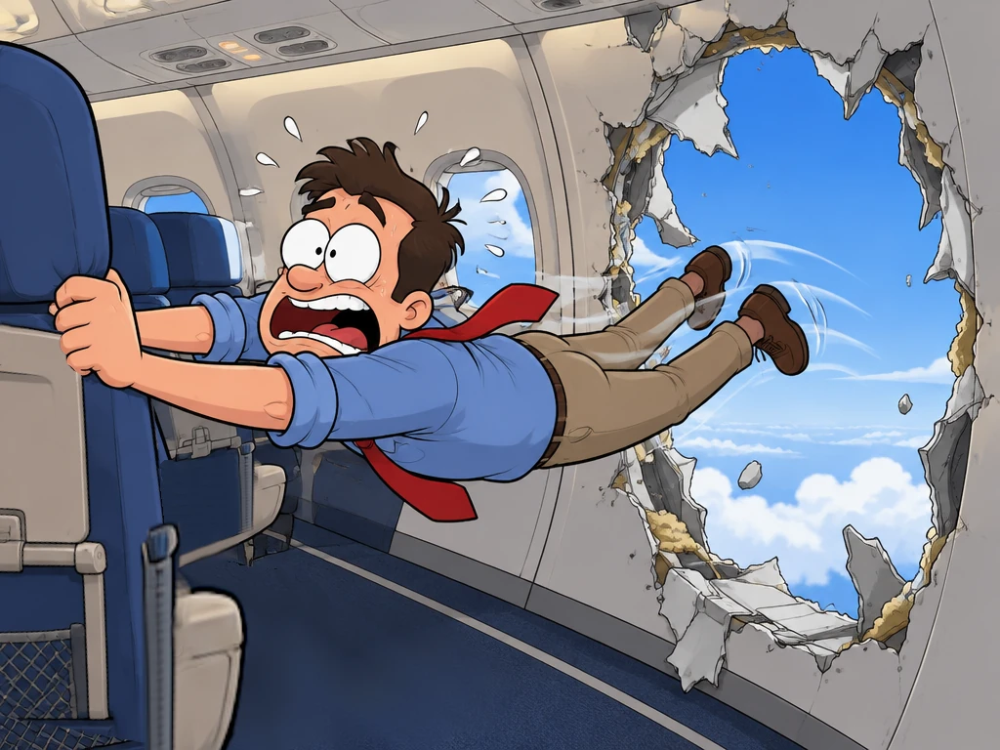

Terror at 16,000 Feet
Based on actual events

It started as a normal Friday evening. A commercial airliner took off from the airport with 171 passengers and six crew members on board. Most people were relaxing, reading, or looking out the window. Little did they know that, only a few minutes later, their lives would change forever.
A Loud Bang
No sooner had the plane climbed past 16,000 feet than there was a huge bang. All of a sudden, a hole the size of a refrigerator blew out of the side of the plane. Within seconds, the cabin was in complete chaos. Wind roared through the cabin, and oxygen masks dropped from the ceiling. Phones, papers, and even a teenage boy's shirt were pulled out into the dark night sky.
"I honestly thought we were going to die," said one terrified passenger sitting a few rows away from the hole. "It was freezing, and the wind was so loud that I couldn't hear myself think."
Luckily, the two seats right next to the hole were empty. If someone had been sitting there, the story could have been very different. It was a close call.
Calm in the Cockpit
Realizing that something was seriously wrong, the pilots acted immediately. The cockpit door flew open, and the captain's headset was almost blown off. However, they kept a cool head and followed their training. They quickly put on their oxygen masks and turned the plane back toward the airport. There was no time to lose.
Meanwhile, the flight attendants moved through the cabin, checking that passengers were wearing their masks and seat belts. "Our job is to reassure people, even when we are scared ourselves," one flight attendant later explained. "If we lose our composure, the passengers will panic too."
About twenty minutes after the explosion, the plane landed safely back at the airport, and the ordeal was finally over. Some passengers burst into tears, while others clapped and cheered. A few people had minor injuries, but amazingly, no one was seriously hurt.
What Went Wrong?
After the accident, investigators began searching for answers. Was it a simple mechanical failure, or was it something worse? Two days later, a schoolteacher found the missing piece of the plane in his backyard, which helped the investigation a lot.
The investigators soon made a shocking discovery. Four bolts that should have held the piece in place were missing. Months earlier, factory workers had removed it to do some maintenance work. When they put it back, nobody replaced the bolts. Because there was no record of the work, a proper inspection was never done.
Many experts said this was not just an accident. They called it negligence — a failure to take proper care. Since then, the plane's maker has faced difficult questions about safety, maintenance, and quality control, and officials have demanded stricter checks at its factories.
For the passengers, however, the memory of that night will never disappear. "Every time I get on a plane now," said one woman, "I look at the wall next to me and wonder."